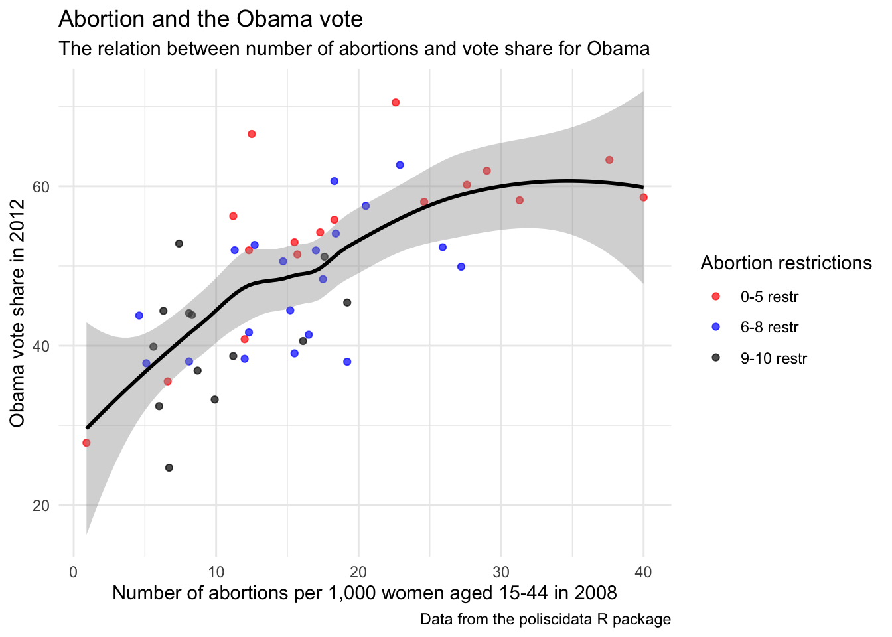

Chapter 11 OLS regression
To provide a simple example of how to conduct an OLS regression, we will use the same data as in the visualisation chapter, i.e. the states data frame from the package poliscidata.
library("poliscidata")
states <- states11.1 Bivariate linear regression
To conduct a bivariate linear regression, we use the lm() function (short for linear models). We need to specify the dependent variable, independent variable and the data frame. Below we specify obama2012 as the dependent variable and abort_rate08 as the independent variable. Notice that we use the ~ symbol to separate the dependent variable from the independent variable. We save the output in the object reg_obama.
reg_obama <- lm(obama2012 ~ abort_rate08, data = states)If we type reg_obama, we can see the intercept and coefficient in the model.
reg_obama##
## Call:
## lm(formula = obama2012 ~ abort_rate08, data = states)
##
## Coefficients:
## (Intercept) abort_rate08
## 35.2589 0.8257Here we see that the intercept is 35.26, which is the predicted vote share for Obama in 2012 when we extrapolate to a state with an abortion rate of 0. The coefficient is 0.83, which is the increase in the vote share for Obama when there is an one-unit increase in the abortion rate.
However, this is not enough information. We need, for example, also information on the standard errors as well as model statistics. To get this, we use the function summary() on our object.
summary(reg_obama)##
## Call:
## lm(formula = obama2012 ~ abort_rate08, data = states)
##
## Residuals:
## Min 1Q Median 3Q Max
## -16.1208 -5.6516 0.6785 4.7242 20.9904
##
## Coefficients:
## Estimate Std. Error t value Pr(>|t|)
## (Intercept) 35.2589 2.2970 15.350 < 2e-16 ***
## abort_rate08 0.8257 0.1297 6.366 6.91e-08 ***
## ---
## Signif. codes: 0 '***' 0.001 '**' 0.01 '*' 0.05 '.' 0.1 ' ' 1
##
## Residual standard error: 7.654 on 48 degrees of freedom
## Multiple R-squared: 0.4578, Adjusted R-squared: 0.4465
## F-statistic: 40.52 on 1 and 48 DF, p-value: 6.912e-08Here we can see that the estimate for abort_rate08 is statistically significant. We can further see that the R-squared is 0.46 which indicates that 46% of the variation in the vote share is explained by our independent variable.
To convert the results from our analysis into a data frame, we can use the package broom (Robinson, 2018).
library("broom")As a first example, we can save the estimates and test statistics in a data frame by using the function tidy(). The function is made to summarise information about fit components. We save the output in a new object reg_obama_tidy and show this output as well.
reg_obama_tidy <- tidy(reg_obama)
reg_obama_tidy## # A tibble: 2 x 5
## term estimate std.error statistic p.value
## <chr> <dbl> <dbl> <dbl> <dbl>
## 1 (Intercept) 35.3 2.30 15.3 3.82e-20
## 2 abort_rate08 0.826 0.130 6.37 6.91e- 8If we would also like to have the confidence intervals, we can add the conf.int = TRUE.
reg_obama_tidy <- tidy(reg_obama, conf.int = TRUE)
reg_obama_tidy## # A tibble: 2 x 7
## term estimate std.error statistic p.value conf.low conf.high
## <chr> <dbl> <dbl> <dbl> <dbl> <dbl> <dbl>
## 1 (Intercept) 35.3 2.30 15.3 3.82e-20 30.6 39.9
## 2 abort_rate08 0.826 0.130 6.37 6.91e- 8 0.565 1.09This is useful if you would like to visualise the results. If we also want goodness of fit measures for the model, such as \(R^2\), we can use the function glance().
glance(reg_obama)## # A tibble: 1 x 11
## r.squared adj.r.squared sigma statistic p.value df logLik AIC BIC deviance df.residual
## <dbl> <dbl> <dbl> <dbl> <dbl> <int> <dbl> <dbl> <dbl> <dbl> <int>
## 1 0.458 0.446 7.65 40.5 0.0000000691 2 -172. 349. 355. 2812. 48Often we also want to save predictions and residuals based on our model. To do this, we can use the function augment(). This function adds information about observations to our dataset. Below we save the output in the object reg_obama_aug.
reg_obama_aug <- augment(reg_obama)To see the data in the new object, use head(). Here you see that there is a variable called .fitted. This variable is the predicted value for each observation.
head(reg_obama_aug)## # A tibble: 6 x 9
## obama2012 abort_rate08 .fitted .se.fit .resid .hat .sigma .cooksd .std.resid
## <dbl> <dbl> <dbl> <dbl> <dbl> <dbl> <dbl> <dbl> <dbl>
## 1 40.8 12 45.2 1.18 -4.36 0.0238 7.71 0.00404 -0.576
## 2 38.4 12 45.2 1.18 -6.81 0.0238 7.67 0.00986 -0.900
## 3 36.9 8.7 42.4 1.41 -5.56 0.0338 7.69 0.00954 -0.739
## 4 44.4 15.2 47.8 1.08 -3.36 0.0201 7.72 0.00201 -0.443
## 5 60.2 27.6 58.0 1.89 2.14 0.0612 7.73 0.00272 0.289
## 6 51.4 15.7 48.2 1.08 3.23 0.0200 7.72 0.00185 0.426We can use this data frame to visualise the residuals (with the colour red below).
ggplot(reg_obama_aug, aes(x=abort_rate08, y=obama2012)) +
geom_segment(aes(xend=abort_rate08, y=obama2012, yend=.fitted),
colour="red") +
geom_point() +
geom_line(aes(x=abort_rate08, y=.fitted)) 
11.2 Multiple linear regression
To conduct a multiple linear regression, we simply need to add an extra variable to our model. Accordingly, the only difference between the example above and the example here is the addition of a new variable. Here, we want to examine whether the effect of abort_rate08 holds when we control for population density (density). Notice that we add a + before adding the variable to the list of variables.
reg_obama_full <- lm(obama2012 ~ abort_rate08 + density, data = states)We use the summary() function to get the output of the model.
summary(reg_obama_full)##
## Call:
## lm(formula = obama2012 ~ abort_rate08 + density, data = states)
##
## Residuals:
## Min 1Q Median 3Q Max
## -16.1719 -5.5567 -0.2101 4.3195 21.5132
##
## Coefficients:
## Estimate Std. Error t value Pr(>|t|)
## (Intercept) 36.019160 2.328169 15.471 < 2e-16 ***
## abort_rate08 0.681420 0.161482 4.220 0.000111 ***
## density 0.007656 0.005214 1.468 0.148669
## ---
## Signif. codes: 0 '***' 0.001 '**' 0.01 '*' 0.05 '.' 0.1 ' ' 1
##
## Residual standard error: 7.564 on 47 degrees of freedom
## Multiple R-squared: 0.4815, Adjusted R-squared: 0.4595
## F-statistic: 21.83 on 2 and 47 DF, p-value: 1.976e-07In the output we see that the coefficient for abort_rate08 is slightly smaller compared to the bivariate model but still statistically significant. Again we can use the tidy() function to get a data frame with the results.
reg_obama_full_tidy <- tidy(reg_obama_full)We further calculate the 95% confidence intervals for the estimates.
reg_obama_full_tidy <- reg_obama_full_tidy %>%
mutate(
ci_low = estimate - 1.96 * std.error,
ci_high = estimate + 1.96 * std.error
) We can then visualise the results.
ggplot(reg_obama_full_tidy, aes(estimate, term, xmin = ci_low,
xmax = ci_high, height = 0)) +
geom_point() +
geom_vline(xintercept = 0) +
geom_errorbarh()
In some cases the intercept is not relevant. In the code below, we use the filter() function to visualise all effects except for the intercept.
reg_obama_full_tidy %>%
filter(term != "(Intercept)") %>%
ggplot(aes(estimate, term, xmin = ci_low,
xmax = ci_high, height = 0)) +
geom_point() +
geom_vline(xintercept = 0) +
geom_errorbarh()
11.3 Saving predictions
To save predictions, i.e. the predicted value on the outcome for each observation, we can use the add_predictions() function in the modelr package. Below we add predictions to the states data frame.
library("modelr")
states <- add_predictions(states, reg_obama_full)The predictions are now saved in the states data frame with the variable name pred. The add_residuals() function can be used to do the same for the residuals.
11.4 Diagnostic tests
To get diagnostic plots, we will use the fortify() function from ggplot2. This allows us to get the following variables realted to model fit statistics:
.hat: Diagonal of the hat matrix.sigma: Estimate of residual standard deviation when corresponding observation is dropped from model.cooksd: Cooks distance, usingcooks.distance().fitted: Fitted values of model.resid: Residuals.stdresid: Standardised residuals
First, we use fortify() on our linear model:
reg_fortify <- fortify(reg_obama_full)To see how our residuals are in relation to our fitted values, we can plot .fitted and .resid.
ggplot(reg_fortify, aes(x = .fitted, y = .resid)) +
geom_point() +
geom_hline(yintercept = 0) +
geom_smooth(se = FALSE) +
labs(title = "Residuals vs. Fitted",
y = "Residuals",
x = "Fitted values")
To see whether our residuals are normally distributed, we create a normal Q-Q plot with the standardized residuals.
ggplot(reg_fortify) +
stat_qq(aes(sample = .stdresid)) +
geom_abline() +
labs(title = "Normal Q-Q",
y = "Standardized residuals",
x = "Theoretical Quantiles")
To estimate the influence of individual observations, we plot the Cook’s distance for each state.
ggplot(reg_fortify, aes(x = seq_along(.cooksd), y = .cooksd)) +
geom_col() +
labs(title = "Cook's distance",
y = "Cook's distance",
x = "Obs. number")
Last, an alternative way to get a series of diagnostics tests is to use the package lindia. This package gives the following functions you can use on an lm object:
gg_reshist(): Histogram of residualsgg_resfitted(): Residual plot of residuals by fitted valuegg_resX(): All residual plots of all predictors by fitted value, layed out in a gridgg_qqplot(): Normaility quantile-quantile plot (QQPlot) with qqline overlayed on topgg_boxcox(): Boxcox graph with optimal transformation labeled on graphgg_scalelocation(): Scale-location plot (also called spread-location plot)gg_resleverage(): Residual by leverage plotgg_cooksd(): Cook’s distance plot with potential outliars labeled on top
To generate all of the above diagnostic plots, you can use gg_diagnose(). More information on the lindia package can be found at https://github.com/yeukyul/lindia.
Last, you can also use the package gvlma, Global Validation of Linear Models Assumptions. This package provide an overview of different assumptions and whether they are met on a specific model.
library("gvlma")
summary(gvlma(reg_obama_full))##
## Call:
## lm(formula = obama2012 ~ abort_rate08 + density, data = states)
##
## Residuals:
## Min 1Q Median 3Q Max
## -16.1719 -5.5567 -0.2101 4.3195 21.5132
##
## Coefficients:
## Estimate Std. Error t value Pr(>|t|)
## (Intercept) 36.019160 2.328169 15.471 < 2e-16 ***
## abort_rate08 0.681420 0.161482 4.220 0.000111 ***
## density 0.007656 0.005214 1.468 0.148669
## ---
## Signif. codes: 0 '***' 0.001 '**' 0.01 '*' 0.05 '.' 0.1 ' ' 1
##
## Residual standard error: 7.564 on 47 degrees of freedom
## Multiple R-squared: 0.4815, Adjusted R-squared: 0.4595
## F-statistic: 21.83 on 2 and 47 DF, p-value: 1.976e-07
##
##
## ASSESSMENT OF THE LINEAR MODEL ASSUMPTIONS
## USING THE GLOBAL TEST ON 4 DEGREES-OF-FREEDOM:
## Level of Significance = 0.05
##
## Call:
## gvlma(x = reg_obama_full)
##
## Value p-value Decision
## Global Stat 10.085 0.03902 Assumptions NOT satisfied!
## Skewness 1.922 0.16565 Assumptions acceptable.
## Kurtosis 0.378 0.53869 Assumptions acceptable.
## Link Function 5.779 0.01621 Assumptions NOT satisfied!
## Heteroscedasticity 2.006 0.15671 Assumptions acceptable.You can find more information on the gvlma package in the description of the package and in this post.